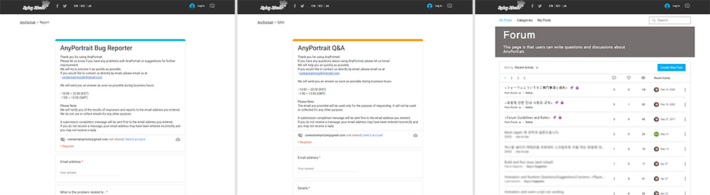

AnyPortrait > Manual > AnyPortrait menu in Unity Editor
AnyPortrait menu in Unity Editor
1.4.0
If you select AnyPortrait's menu in the Unity editor, you can see quite a few items.
In addition to the function to open AnyPortrait editor, there are items such as providing information to users, which are introduced one by one on this page.

If you select the Window > AnyPortrait menu of the Unity Annator, you can see several sub-menus as shown above.
Each item is as follows.
- 2D Editor : Open AnyPortrait editor.
- Reset Editor : If the editor has encountered a critical problem and cannot be opened, click this to reset the editor's data.
- Change Installation Path :
If the AnyPortrait package is installed in a non-default path, click this item to change the installed path. (Related page)
- Refresh All Meshes : Refresh the meshes of all apPortrait characters currently placed in the scene in a batch.
- Homepage : Open the RainyRizzle team's home page.
- Getting Started : Open the tutorial page for beginners.
- Manual : Open the manual page introducing AnyPortrait functions.
- Scripting : Open the API page where you can see descriptions of script functions.
- Video Tutorials : Open the video tutorial page.
- Update Log : Open the tutorial page created as a video.
- Report a Bug or Suggestion : Open a page where you can contact us if you find a bug or have a suggestion.
- Ask a Question : Open a page where you can ask questions directly to our team.
- Forum : Open a forum page where you can share your questions, needs, and bugs found with our team and users.
- Open Asset Store Page : Open the AnyPortrait page in the Asset Store.
Refresh all meshes

AnyPortrait's mesh is temporary data generated in real time, so if it is copied from a prefab or other scene, it will not be displayed as above.
(1) Currently there are 6 characters in the scene, (2) but nothing is shown in the scene.

(1) In the Unity editor, select Refresh All Meshes from the AnyPortrait menu.

A dialog will appear asking if you want to update the meshes of the characters found in the current scene.
(Inactive characters are excluded.)

As above, the meshes of all the characters are refreshed again and can be seen in the scene.
Open document pages

Homepage, Getting Started, Manual, Scripting, and Video Tutorials open a web page that provides information you need to use AnyPortrait.
Check the update changes

If you open the Update Log item, you can reopen the dialog you could see immediately after the update.
Check out what's added and improved in the new version!
Contact us

Report a Bug or Suggestion, Ask a Question, and Forum open a page where you can contact us when you find a bug or have a question.
You can contact us directly or share it with other users on the forum.
We are always trying to help you as quickly as possible.
Please feel free to contact me with any questions you may have!